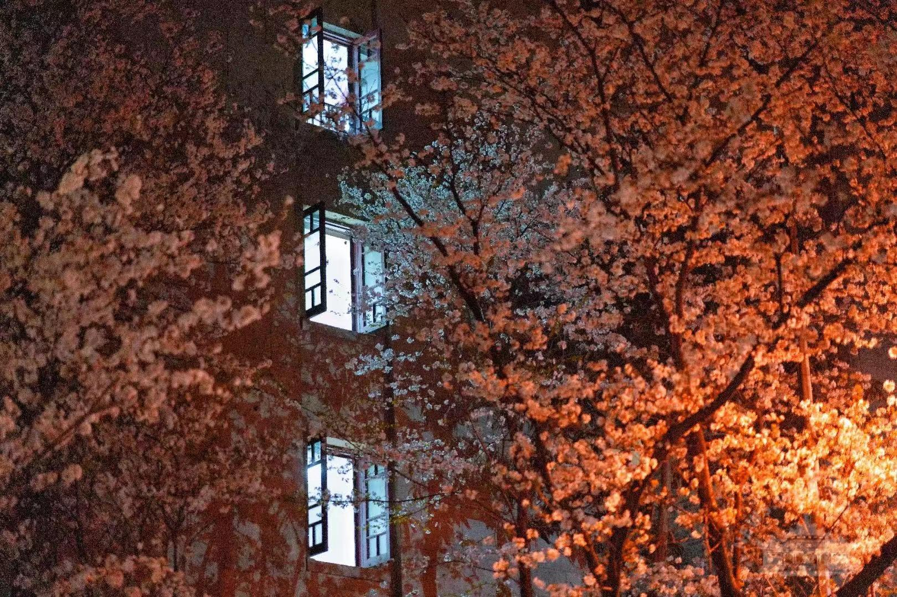
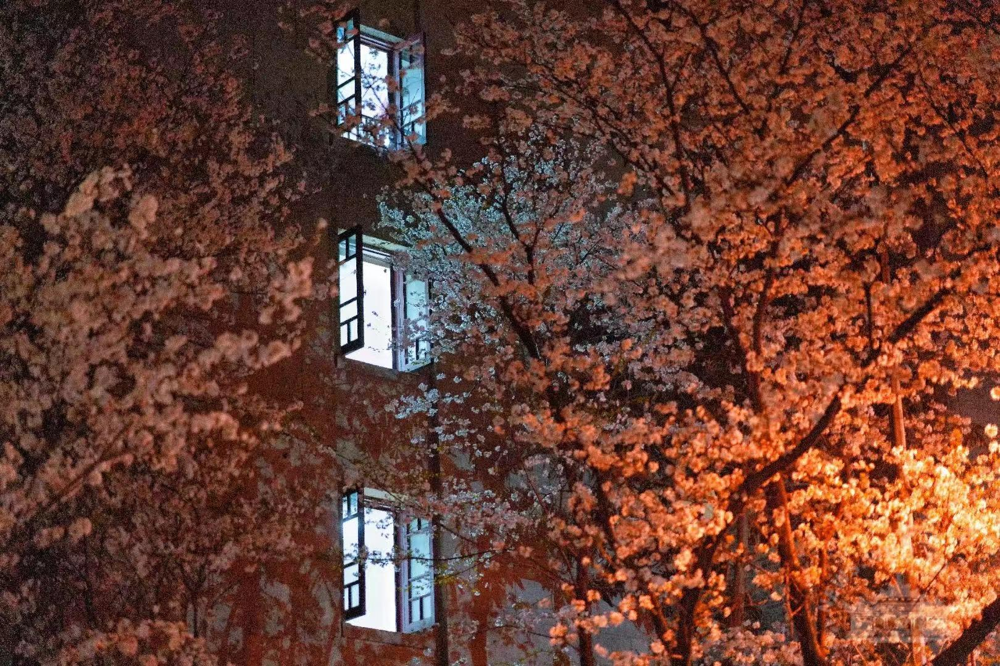

景点列表
推荐景点1--凌波门
东湖之畔，凌波门巍然。此门非为御敌，实乃通幽之径，观澜之台也。烟波浩渺，水天一色，极目远眺，心旷神怡。春则烟波浩渺，夏则荷风送爽，秋则长空雁阵，冬则寒水凝光。晨曦微露，学子于此晨读，书声琅琅，与湖波相和；夕照熔金，游人凭栏远望，看归帆点点，鸥鹭齐飞。栈道蜿蜒入湖，人行其上，恍若凌波微步，飘飘乎遗世独立。湖风拂面，涤荡尘虑，水光潋滟，映照学府之灵秀。一湖碧水，万顷澄波，映照珞珈之山色，涵养武大之精神，诚为涤心洗目之佳境。
推荐景点2--珞珈山
学府之基，首推珞珈。山势逶迤，林木葱茏，四季流转，景致各异。春日山花烂漫，新绿初染，鸟鸣深涧；夏日浓荫蔽日，蝉噪林逾静，清风自生凉；秋日层林尽染，枫红槭黄，铺金叠彩；冬日雪压松枝，玉树琼花，更显肃穆清幽。山径曲折通幽，拾级而上，古木参天，藤萝缠绕，苔痕上阶绿。登临高处，俯瞰学宫楼宇，星罗棋布于苍翠之间；远眺东湖烟波，浩淼接天。珞珈山色，非徒自然之胜，更蕴钟灵毓秀之气，滋养代代学人，文脉深植于此莽莽山林。

推荐景点3--樱花大道
春回大地，樱花大道乃珞珈绝色。老斋舍前，两行樱树，绵延数百步。花期既至，千朵万朵，如云似霞，骤然绽放，灿若星河坠地。粉白交织，娇而不艳，丽而不俗。微风过处，落英缤纷，似蝶舞翩跹，铺就锦毯香径。游人学子，摩肩接踵，仰观玉树琼葩，俯拾片片芳菲。花影婆娑，映衬飞檐画栋；笑语欢声，融入落花清风。此景之盛，短暂而绚烂，譬若韶华易逝，教人惜取春光。花开花落间，大道成诗，游人入画，是谓“三月赏樱，唯有武大”，诚非虚言。
 
